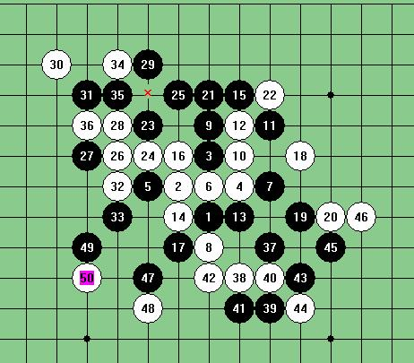

黑石的错误
#1 黑石的错误 作者：冷面孤煞 发表时间：2009-5-31 19:19:34
=======上图对应的爱五子棋谱代码如下，以便你拆解：========
h8i9h6h9j9j8k7j11i10h11g10k10i11l9m8k12f10h10h13k9k11i7l10j12f8j13
======================================================大家如果有兴趣的话，用3.7版本的黑石算一下到这里黑石算出来的结果分值在230左右了
=======上图对应的爱五子棋谱代码如下，以便你拆解：========
h8i9h6h9j9j8k7j11i10h11g10k10i11l9m8k12f10h10h13k9k11i7l10j12f8j13j14m10
======================================================算到28手的时候分值反而变成负数，郁闷中。。。。。
 结果白赢，大家点上29手黑石又能算出怎么杀，
结果白赢，大家点上29手黑石又能算出怎么杀，
#2 Re:黑石的错误 作者：wrwak 发表时间：2009-5-31 19:21:05
lz火星了
#3 Re:黑石的错误 作者：冷面孤煞 发表时间：2009-5-31 19:22:31
=======上图对应的爱五子棋谱代码如下，以便你拆解：========
h8i9h6h9j9j8k7j11i10h11g10k10i11l9m8k12f10h10h13k9k11i7l10j12f8j13j14m10l11m12
======================================================
4哥终结者的错误，我用 计算 里的找最好点算出来的30手，错错错！！！！
#4 Re:黑石的错误 作者：冷面孤煞 发表时间：2009-5-31 19:23:37
一盘棋目前最先进的两个软件的错误，哈哈哈哈，我倒
#5 Re:黑石的错误 作者：不知 发表时间：2009-5-31 19:36:31
 软件过度依赖症的后果..这两个软件的BUG一堆..不仅仅是设置..还要看用法..剑有双刃..锋偏伤己
软件过度依赖症的后果..这两个软件的BUG一堆..不仅仅是设置..还要看用法..剑有双刃..锋偏伤己
#6 Re:黑石的错误 作者：wrwak 发表时间：2009-5-31 19:52:15
你的垃圾黑石吧 我的没错啊 白胜啊#7 Re:黑石的错误 作者：越狱行辕 发表时间：2009-5-31 20:05:53
你确定终结者也错？我拿破解版的扫 都能扫出来
#8 Re:黑石的错误 作者：gerbo 发表时间：2009-5-31 20:43:38
终结者的C不完全是对的.以前有过几次的这样的研究事故了..
#9 Re:黑石的错误 作者：冷面孤煞 发表时间：2009-5-31 21:18:23
6楼的黑石发个上来共享一下撒
#10 Re:黑石的错误 作者：賢周 发表时间：2009-5-31 21:27:00
=======上图对应的爱五子棋谱代码如下，以便你拆解：========
h8i9h6h9j9j8k7j11i10h11g10k10i11l9m8k12f10h13i12h10h12f12g11e9j6g9f9k9k11l10m11m10n10l11l8m9i14i13n9g13f13e11h4i5d10j13k13h14i15e10
======================================================
#11 Re:黑石的错误 作者：aabb 发表时间：2009-5-31 21:47:57
 试了下，3.7果然如LZ所说。。不过终结者没错，26直接地毯。。
试了下，3.7果然如LZ所说。。不过终结者没错，26直接地毯。。
#12 Re:Re:黑石的错误 作者：岳麓小棋后 发表时间：2009-5-31 22:16:08
对黑石VALUE这么依赖呀，给楼主一个变化测试下你的黑石反映，咯咯，一定会吓你一跳的

49手下去看下小黑VALUE，50下去再看下小黑VALUE，看谁的小黑转弯速度最快，哈哈
#13 Re:黑石的错误 作者：无尽 发表时间：2009-5-31 22:22:20
我3.7和终结者都正确杀了
#14 Re:黑石的错误 作者：冷面孤煞 发表时间：2009-5-31 23:44:42
 小棋后你福建哪里的哦，
小棋后你福建哪里的哦，
#15 Re:黑石的错误 作者：自来水 发表时间：2009-6-1 17:59:58
这个问题其实很常见啊……
=======上图对应的爱五子棋谱代码如下，以便你拆解：========
h8i9g6i10e8f7e7
======================================================
比如让黑石算这局面，就会很乱的。
不过这个倒不可怕，最终会真相大白的，可怕的是它卡死。。。。
#16 Re:黑石的错误 作者：小家碧玉 发表时间：2009-6-1 19:23:07
果然明星三打的这个变化已经众人皆知了……
#17 Re:黑石的错误 作者：longfx 发表时间：2009-6-2 9:15:47
我的黑石3.7能正确算出来...#18 Re:黑石的错误 作者：神奇史沟飞 发表时间：2009-6-2 19:22:23
25 下 26 黑必胜！#19 Re:Re:黑石的错误 作者：wd1988 发表时间：2009-6-7 23:25:50
引用：那是禁手。。。。
原文由 神奇史沟飞 发表于 2009-6-2 19:22:23 :
25 下 26 黑必胜！